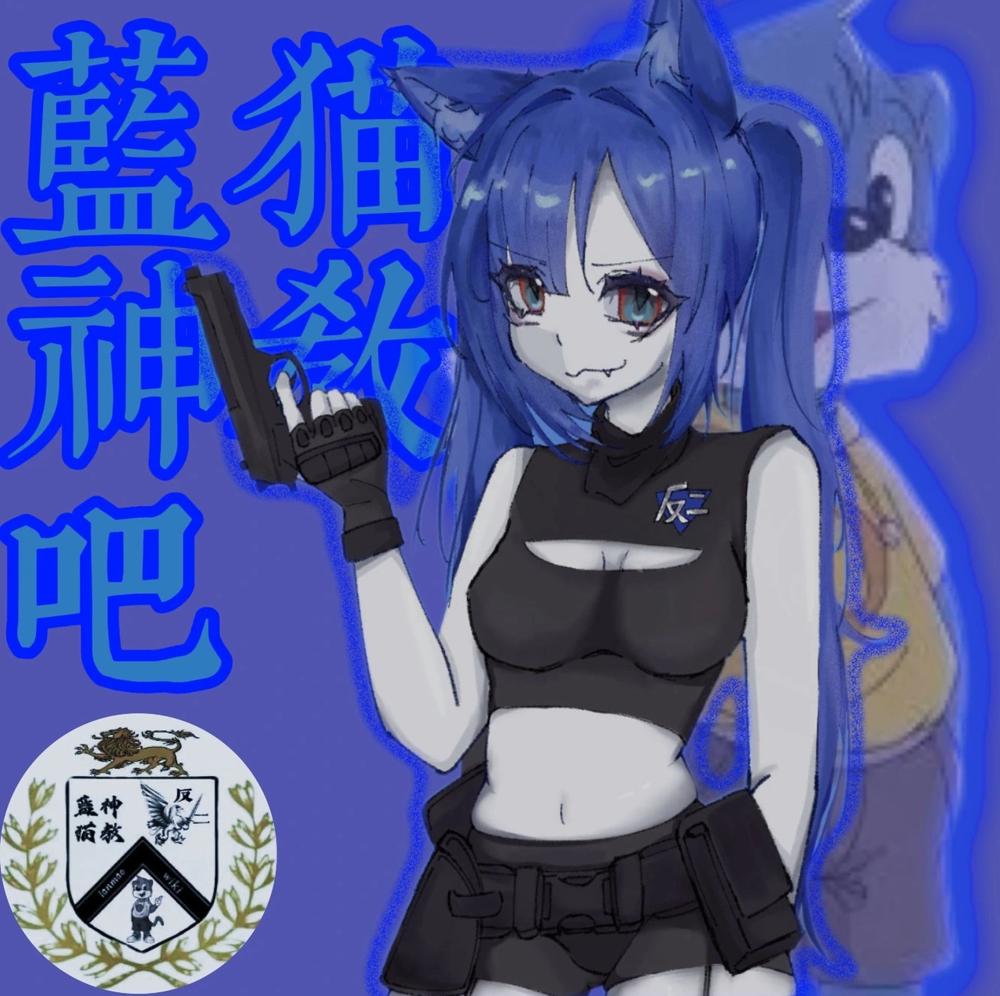
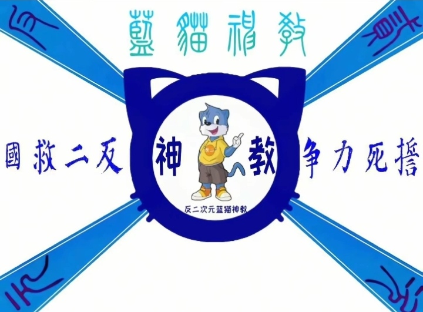
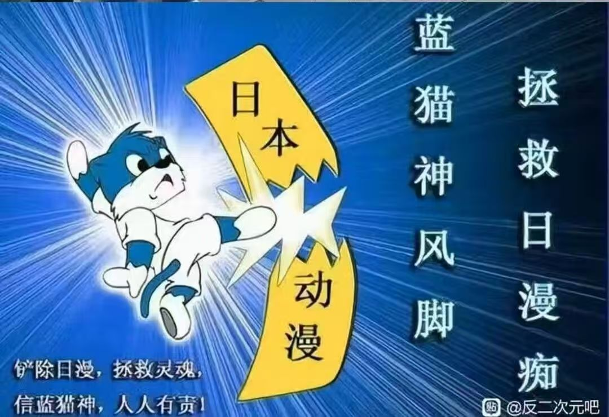

聚是一团火，散是满天星
持续关注“蓝猫.wiki”解锁更多奇异搞笑
蓝猫，没你想的那么简单
站长“天子，漠河”

蓝猫神教吧：承载一代人青春记忆的精神角落
一、起源与早期争议（2004-2008）
百度蓝猫吧的诞生与2000年代国产动画《蓝猫淘气三千问》的热播直接相关。这部以科普为核心的长篇动画凭借广泛的电视覆盖率，吸引了大量低龄观众，贴吧最初作为动画爱好者的交流平台应运而生，早期内容多围绕剧情讨论、角色赏析展开。
但争议很快滋生。由于《蓝猫淘气三千问》存在部分科普错误（如“铁分子”等表述），且被指挪用日漫配乐甚至波兰国歌，引发日漫爱好者群体不满。2004-2005年间，犬夜叉吧等日漫社群因版权争议率先发起对蓝猫吧的爆吧行动，双方冲突迅速升级为“国漫支持者”与“日漫爱好者”的阵营对立，甚至牵扯民族情绪议题。这场持续数月的“贴吧战争”让蓝猫吧沦为主战场，吧内充斥垃圾帖，吧主职位频繁更迭，一年更换数十人，贴吧长期处于混乱状态。
二、蓝猫神教崛起与全面混战（2009-2012）
混乱中，“蓝猫神教”（又称蓝猫圣教）逐渐成型，成为左右吧务走向的核心力量。这一组织以“支持国漫、抵制日漫”为表面口号，实则由部分资深日漫观众与网络钓鱼者组成，通过极端言论和组织化行动调戏“日漫痴”为乐。神教炮制了长达数十句的激进口号，罗列“先灭火影，后诛高达”等针对热门日漫的攻击内容，形成独特的亚文化符号。
此时的蓝猫神教已从单纯的贴吧群体演变为专业爆吧组织。2006年1月，因“机器猫吧”与国漫吧的冲突，蓝猫神教发起对机器猫吧的大规模爆吧，使其长期瘫痪；2007年“6·21事件”中，神教作为核心力量参与对李宇春吧的爆吧行动，一夜之间刷屏近10万条无意义帖子，成为中文互联网早期爆吧文化的标志性事件。同时，神教内部还分化出“海红军团”等分支，以“海红帝合暴极”等角色为核心构建架空世界观，将贴吧冲突演绎为“种族战争”叙事，进一步加剧混乱。
这一时期，蓝猫吧的定位彻底偏离动画讨论，沦为亚文化冲突的策源地。由于爆吧频发，百度官方多次介入封号，甚至一度封闭蓝猫吧，但其成员转而在孙立军吧等平台继续活动，影响力未减。
三、转型阵痛与秩序重建（2013-2018）
混乱格局在2010年后逐渐松动。一方面，蓝猫神教的极端行为引发广泛反感，内部因理念分歧逐渐瓦解；另一方面，“蓝猫”这一名称引发新的混淆——俄罗斯蓝猫、英国短毛猫等宠物猫爱好者涌入贴吧，大量宠物交易帖挤占动画讨论空间，迫使原核心群体分流。
2013年后，真正的《蓝猫淘气三千问》爱好者趁机申请吧主职位，启动秩序重建。他们首先推动贴吧拆分，将宠物相关内容分流至“俄罗斯蓝猫吧”，明确蓝猫吧的动画讨论属性；随后清理历史爆吧痕迹，删除神教相关激进内容，逐步恢复正常交流氛围。这一过程中，部分老吧民仍残留对神教时期的怀旧情绪，偶尔出现相关梗图，但未引发大规模冲突。
四、规范发展与怀旧回归（2018至今）
2018年7月，蓝猫吧正式发布吧规，明确禁止蓝猫神教相关活动及洗白言论，标志着贴吧进入规范化阶段。此后，吧内核心内容回归《蓝猫淘气三千问》本身，包括动画剧情考据、科普错误修正、配音演员葛平相关素材分享等。葛平的经典配音片段被二次创作为鬼畜素材，如“石家庄的小朋友”“吴克”等梗，成为贴吧连接年轻用户的桥梁。
如今的蓝猫吧已转型为怀旧向社区，聚集着一批成长于2000年代的观众。他们分享童年观剧回忆，整理动画资源，讨论角色设定演变，偶尔提及早期爆吧历史，但多以调侃视角看待。贴吧定期举办“蓝猫知识问答”“经典片段重温”等活动，既保留亚文化基因，又形成温和有序的交流氛围。
值得一提的是，蓝猫神教作为中文互联网早期亚文化的缩影，其历史仍被部分网友考古。但在吧规约束下，相关讨论仅作为怀旧谈资，不再引发冲突。而《蓝猫淘气三千问》作为国产科普动画的代表，通过贴吧这一平台持续传递着集体记忆，使其在动画播出二十余年后仍保持着生命力。
从亚文化战场到怀旧净土，蓝猫吧的发展史映射了中文互联网社区的成长轨迹——从无序冲突到规范治理，从极端对立到多元包容，最终沉淀为承载一代人青春记忆的精神角落。

极致的“反萌”主义

反二救国的决心！